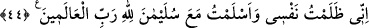

GÖZ AÇIP KAPAMADAN
ONU GETİRİRİM
38. (Sonra Süleyman müşavirlerine) dedi ki: “Ey ileri gelenler, onlar teslimiyet
gösterip bana gelmeden önce, hanginiz o melikenin tahtını bana getirebilir?”
39. Cinlerden bir ifrit: Sen makamından kalkmadan ben onu sana getiririm.
Gerçekten bu işe gücüm yeter ve bana güvenebilirsiniz, dedi.
40. Kitaptan (Allah tarafından verilmiş) bir ilmi olan kimse ise: Gözünü açıp
kapamadan ben onu sana getiririm, dedi. (Süleyman) onu (melikenin tahtını) yanı
başına yerleşmiş olarak görünce: Bu, dedi, şükür mü edeceğim, yoksa nankörlük
mü edeceğim diye beni sınamak üzere Rabbimin (gösterdiği) lütfundandır.
Şükreden ancak kendisi için şükretmiş olur, nankörlük edene gelince, o bilsin ki,
Rabbimin hiçbir şeye ihtiyacı yoktur, çok kerem sâhibidir.
41. (Süleyman devamla) dedi ki: Onun tahtını bilemeyeceği bir hale getirin;
bakalım tanıyacak mı, yoksa tanıyamayanlar arasında mı olacak.
42. Melike gelince: “Senin tahtın da böyle mi?” dendi. O şöyle cevap verdi:
“Tıpkı o! Bize daha önce (Allah’tan) bilgi verilmiş ve biz müslüman olmuştuk.”
43. Onu, Allah’tan başka taptığı şeyler (o zamana kadar tevhid dinine girmekten)
alıkoymuştu. Çünkü kendisi inkârcı bir kavimdendi.